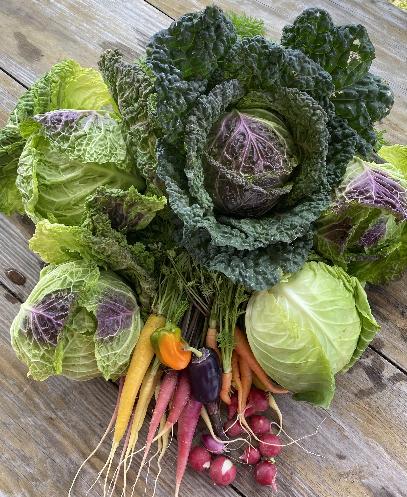
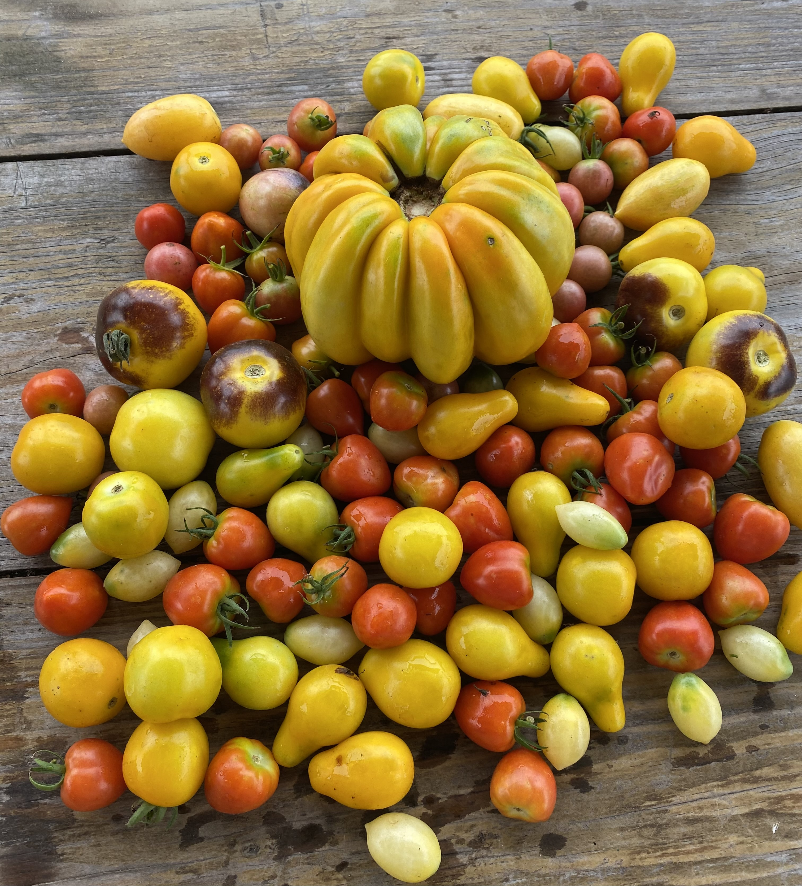
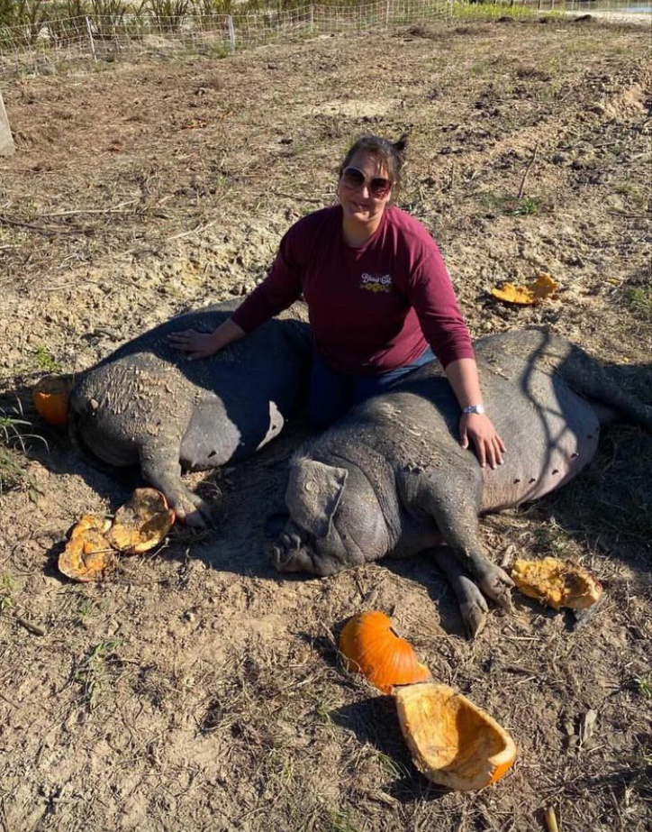

A farm-to-mission model connecting recovery, employment, and regenerative farming.
The Regenerative Farm Initiative is a partnership between The Farm at Okefenokee and Trinity Rescue Mission, designed to provide holistic education for children, create life-giving job opportunities for women and single mothers, and produce nutritious food to feed the homeless of Jacksonville, Florida.
This is not a garden project. It is a full-scale regenerative farming operation designed to sustain employment, education, and food production for years to come.


Investing in the future by providing children with the education they need to break the generational cycle of unhealth. Education can enable children to thrive and live an abundant life.
Real nutrition starts with real food. Those who are homeless lack consistent access to the whole, minimally processed foods that form the foundation of physical health, immune function, and long-term vitality. This initiative delivers regenerative, nutrient-dense food to those who need it most.
Creating life-giving jobs for women and single mothers in a safe environment where they can disconnect from chaos and step into stability, mentorship, and structure. Through training at Okefenokee Farm's established farm-to-table model, the fruit of their labor becomes regenerative food that feeds guests at Trinity Rescue Mission in downtown Jacksonville.
This initiative is designed so that the jobs created for women directly produce food that feeds the tables at Trinity Rescue Mission. The women tangibly see that their work matters — all while growing in a safe environment that develops life-long skills.
In addition to the women's work, children have access to farm education that goes beyond the classroom, teaching principles that instill long-term sustainable growth.
